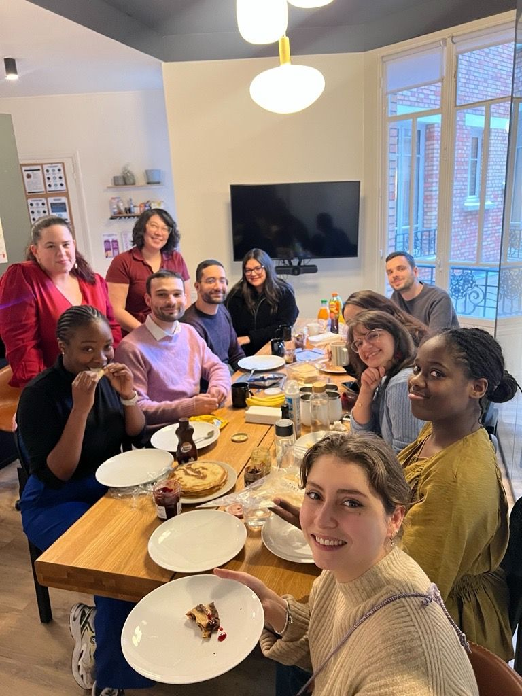
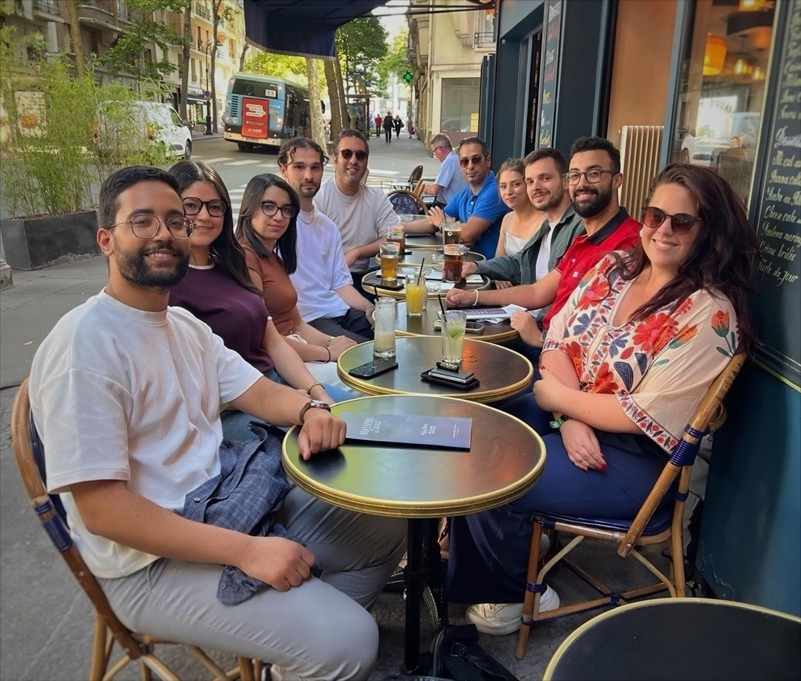
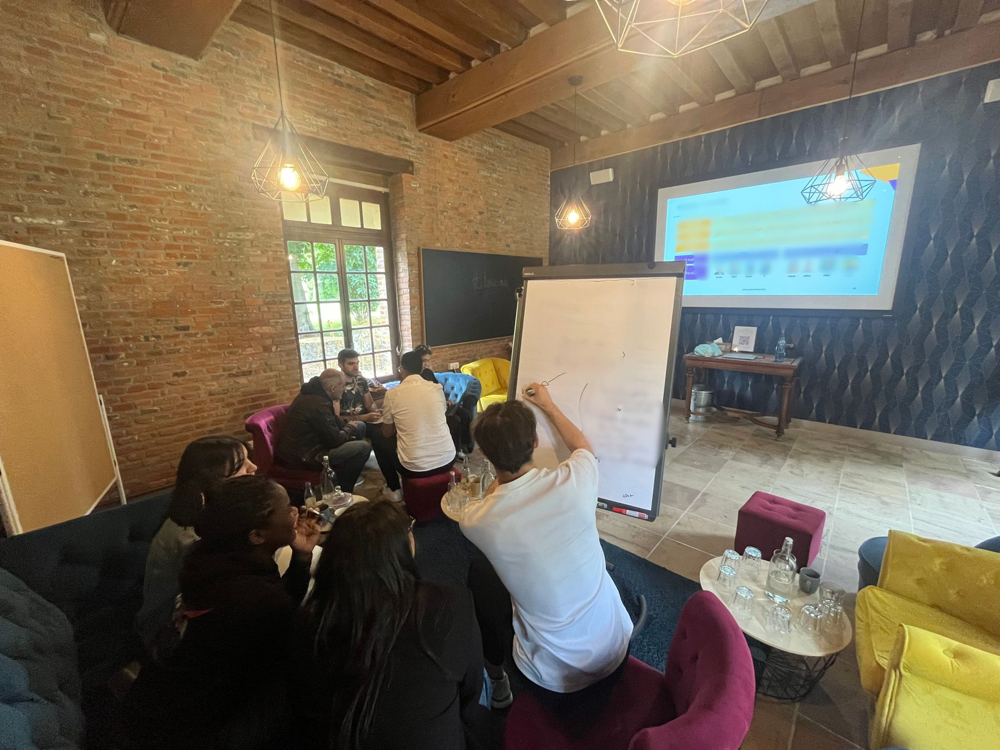

01
Missions à impact
Intervenez sur des sujets stratégiques auprès de grands comptes, dans des secteurs variés où vos recommandations comptent vraiment.
Actinuance Consulting est avant tout une équipe soudée qui évolue dans un contexte à la fois convivial et exigeant. Notre entreprise existe parce que nous croyons en l'honnêteté intellectuelle comme fondement de l'évolution de carrière dans le monde du conseil.
Ce que vous retrouverez chez Actinuance
Intervenez sur des sujets stratégiques auprès de grands comptes, dans des secteurs variés où vos recommandations comptent vraiment.
Challengez vos méthodes, croisez les expertises et construisez des réponses concrètes, adaptées à chaque contexte client.
Évoluez dans un environnement sain, exigeant et humain, où la qualité du collectif est aussi importante que la qualité des livrables.
Profitez d’un parcours lisible et individualisé, avec des objectifs transparents et une évolution alignée sur vos ambitions.
Créez une relation de proximité avec votre équipe et le management, dans une culture d’écoute, d’entraide et de feedback utile au quotidien.
Nous privilégions un discours factuel et une posture enabler: des recommandations actionnables, une trajectoire claire et des résultats mesurables, de la stratégie à l’opérationnel.
Un premier échange RH pour comprendre votre parcours, vos attentes et votre projet professionnel.
Questions techniques, étude de cas et approfondissement ciblé selon votre expertise, avec un compte rendu structuré.
Entretien final dans nos locaux pour valider l'ADN Actinuance et vous projeter concrètement dans l'équipe.
Onboarding, prise en main de vos missions et intégration dans l'équipe pour démarrer rapidement dans les meilleures conditions.
Une structure lisible et transparente, avec des niveaux de postes définis du niveau junior jusqu'aux rôles d'experts, de managers seniors et de direction, sans barrière d'âge ni seuil d'ancienneté imposé pour progresser.
L'acticademy vous accompagne au quotidien pour approfondir vos connaissances sur les sujets qui vous animent. Des formations certifiantes proposées à chaque passage de grade selon votre parcours professionnel défini avec votre manager.
Vos réalisations et votre contribution sont reconnues, avec une progression salariale alignée sur votre impact.
Votre performance ne se limite pas aux résultats : elle transforme l’organisation. Cette contribution stratégique est reconnue et se traduit par une évolution salariale cohérente avec l’impact que vous créez.
Chaque étape élargit votre impact: excellence en mission, contribution interne, puis participation active aux décisions et au développement du cabinet.
Découvrir les méthodes Actinuance, contribuer à des analyses et livrables encadrés, et poser des bases solides sur la qualité d'exécution.
Gagner en autonomie sur les missions, fiabiliser la relation client au quotidien et commencer à participer à la vie interne du cabinet.
Piloter des périmètres plus larges, encadrer les profils juniors et contribuer à la capitalisation interne (REX, contenus, événements).
Coordonner des équipes sur missions longues, sécuriser le delivery et participer plus activement aux sujets de recrutement et d'offres.
Porter la performance des missions, développer la relation client dans la durée et contribuer au développement commercial du cabinet.
Structurer la croissance de pôles d'expertise, animer le management intermédiaire et transformer les enjeux de marché en priorités opérationnelles.
Porter la vision du cabinet, arbitrer les orientations clés et garantir dans la durée la culture et les standards d'excellence Actinuance.
Des moments simples et réguliers pour se retrouver, décompresser et garder un vrai lien d'équipe entre les rythmes de mission.
Un temps fort annuel pour prendre du recul, partager la vision du cabinet et renforcer les liens dans un cadre plus informel.
Un format maison: apéro, présentation d'un sujet et échanges ouverts. Le thème peut être tech, métier, ou simplement une passion portée par le consultant.



.jpg)


Un dispositif Edenred+ simple et avantageux pour accompagner vos journées, avec des bénéfices additionnels via les partenaires.
Une mutuelle de haut niveau, conçue pour sécuriser sereinement votre parcours personnel et professionnel.
Des congés mobilisables dès le premier jour, pour offrir de la souplesse dès le démarrage de votre trajectoire.
Une politique flexible et structurée, qui permet d'équilibrer efficacement performance collective et organisation individuelle.
Un ensemble d'avantages CSE amené à s'enrichir dans le temps, en phase avec les attentes des équipes et la croissance du cabinet.
Des locaux situés à Paris Rive Gauche, au sein d'un quartier vivant offrant une richesse gastronomique et culturelle remarquable.